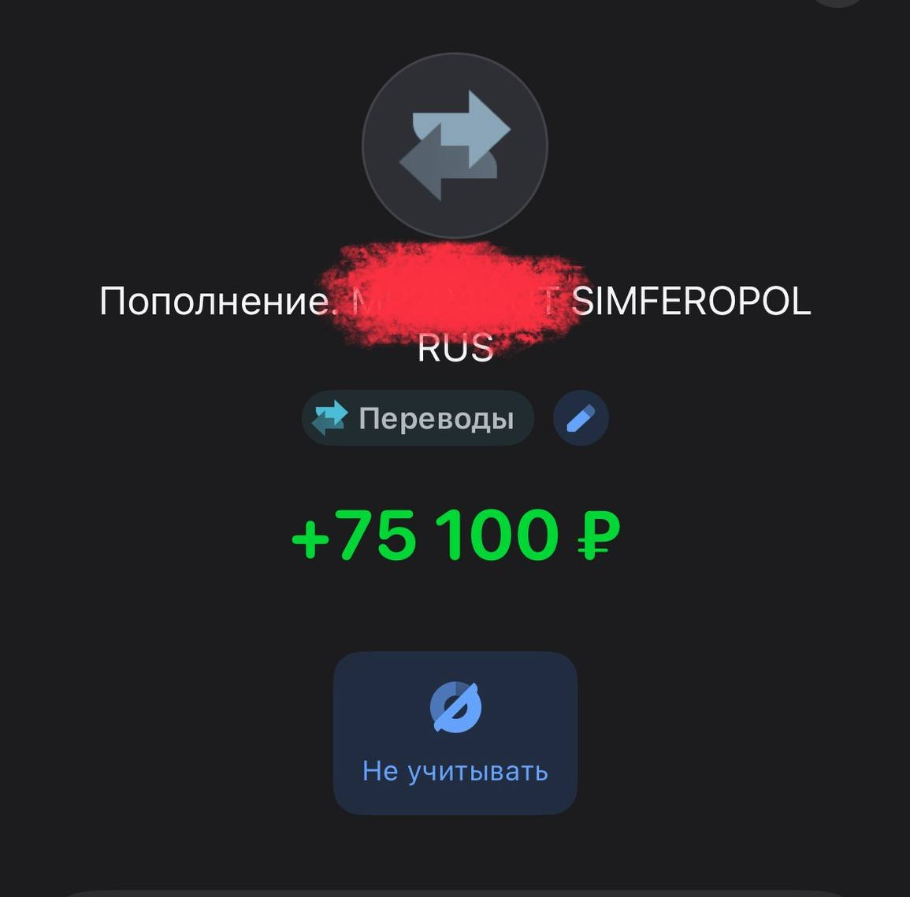
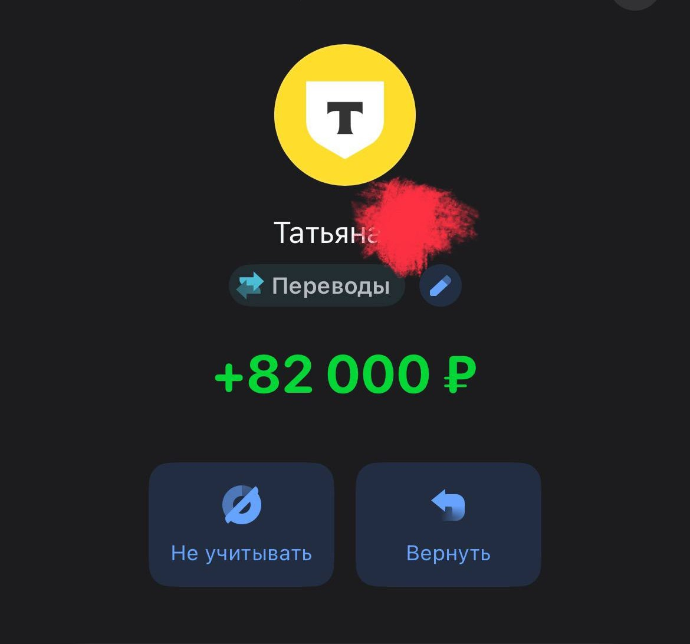
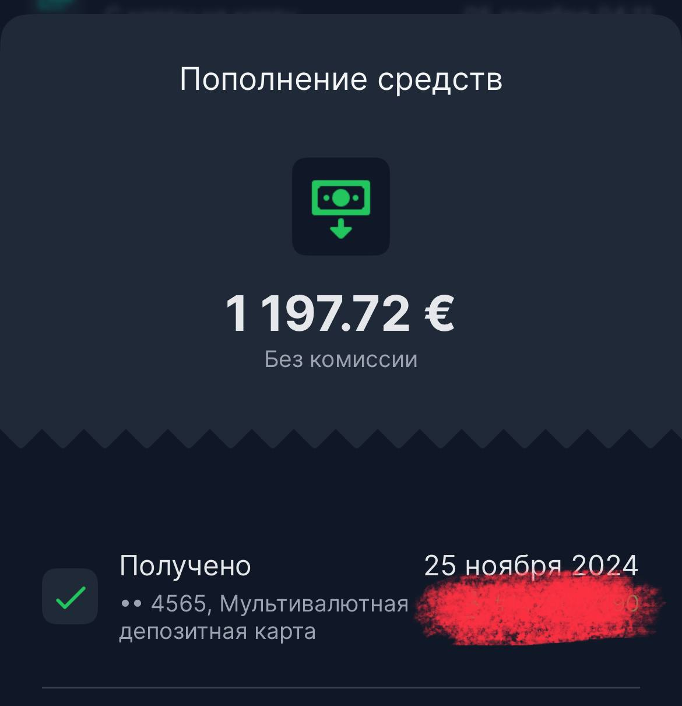

Метод, после которого уже на третьей встрече клиент говорит: «После вас моя жизнь поделилась на до и после»
Школа гипнотерапии и практической психосоматики. От первой техники до собственной практики с клиентами — за 3 месяца. Без корочек, большого блога и 5 лет скучной теории.
Вот какой заголовок я бы тут написал, если бы хотел тебя зацепить любой ценой
«По ряду исследований есть метод с эффективностью 93% — это гипноз. И его не преподают ни в одном российском вузе»
Красиво, да? Теперь по-честному.
Эту цифру реально взяли из исследования Alfred Barrios, American Health Magazine. Её вставляют в шапку большинство школ гипноза. Проблема в том, что оно устарело: маленькая выборка, старая методология, по современным научным критериям оно не валидно. Откроешь внимательно — увидишь сам за десять минут.
Я мог бы его поставить крупным шрифтом и не моргнуть. Так делает половина рынка. Но в тот момент, когда ты проверишь и увидишь что цифра хлипкая — улетит не цифра, а твоё доверие ко мне. И правильно сделает.
Поэтому вот другие числа. Без звёздочек и оговорок:
- 1958 год — Американская медицинская ассоциация официально признала гипнотерапию как метод. Британская — следом. Это не альтернативная практика и не эзотерика.
- 71% пациентов с синдромом раздражённого кишечника после курса гипнотерапии получают устойчивое улучшение, которое держится годами. Университет Манчестера, журнал Gut, 2003.
- Гипноз в 2 раза повышает эффективность разговорной терапии. Это подтверждает мета-анализ 18 научных работ с общей выборкой 590 человек (мета-анализ — это когда учёные сводят вместе данные из многих исследований).
- Стэнфорд доказал гипноз на МРТ. В 2016 году медицинская школа Стэнфорда просканировала мозг людей во время гипноза и зафиксировала три конкретных изменения активности. Это значит: гипноз — не театр и не самовнушение, в гипнозе мозг физически работает иначе. Spiegel et al., Cerebral Cortex.
- 200+ научных исследований в медицинских журналах мирового уровня (Cochrane, Journal of Clinical Psychology). «Научное» значит — до публикации каждую работу проверяют независимые учёные на ошибки и подлоги. Это не статья в блоге, это наука.
А теперь самое странное. Несмотря на всё это, в российских психфаках гипнотерапия — не обязательный предмет, максимум факультатив. Метод доказанно работает, но остаётся за рамками классического психологического образования. Поэтому специалистов с реальным владением методом — единицы.
Пока другие разговаривают, клиенты тихо уходят к гипнотерапевтам. И получают желаемые изменения за 4–8 сеансов.
Это была статистика. Дальше — зеркало.
Сейчас будет немного неприятно...
Выбери свою ситуацию, нажми на свой вариант
«Каждое утро как каторга»
Ты работаешь 3–5 лет на нелюбимой работе. Вечером пустота и сериал, чтобы не думать. В выходные фоновая тревога, что ещё одна неделя прошла, а ты ничего не сделал для себя. Ты во всём этом, а жизнь тихо проходит мимо.
«Сертификаты есть, а клиентов нет»
Потратил деньги на обучение. Может, даже не на одно. Получил бумажку, а что с ней делать, не объяснили. Консультируешь знакомых бесплатно, они говорят «спасибо, ты классный», но никто не платит. Выйти в платную практику страшно, кажется, что ты ещё «не готов», хотя внутри понимаешь, что готов давно.
«Хочу помогать людям, но не знаю с чего начать»
Чувствуешь, что можешь больше. Люди вокруг уже приходят к тебе за советом — и тебе правда нравится им помогать. Но между «хочу помогать» и «веду практику и зарабатываю» — стена, которую непонятно как пробить без системы.
«Живёшь от зарплаты до зарплаты»
Не хочу залезать в твой кошелёк, но у меня была похожая история. Каждый раз, когда приходит зарплата, ты уже знаешь, куда она уйдёт до последней тысячи. Подработки и фриланс капают рывками: то густо, то неделями тишина. Копить не получается, любая поломка или незапланированный поход к врачу выбивает бюджет на месяц. И где-то на фоне тихо лежит мысль про свою практику, но ты её отгоняешь, потому что сейчас надо считать до 20-го.
«Клиенты ходят по кругу и я вместе с ними»
Работаешь с человеком 6–12 месяцев. Обсуждаете одно и то же. Защитные механизмы стоят стеной: рационализация, отрицание, «да я всё понимаю». Сам видишь, что бьёшься в стекло. Клиент уходит молча, а ты остаёшься с ощущением, что подвёл.
«Доход 100–150к и ощущение, что это навсегда»
Работаешь 6–8 часов голосом, больше физически не влезет. Хочешь поднять чек, но страшно: вдруг уйдут те, кто есть. А брать больше клиентов некуда, день уже забит. Крутишься в одном и том же доходе месяц за месяцем и непонятно как из этого выбраться.
«Блог веду, но он не приводит клиентов»
500 подписчиков, посты в пустоту, видео не залетают. Пишешь полезные тексты, лайкает мама и её две подруги. А девочка без образования с красивой упаковкой набирает полную запись. Обидно, но непонятно, что делать по-другому.
«Выгораю и не вижу ради чего»
Эмоционально вкладываешься в каждого клиента, а результат размытый. Ушёл, и тишина. Ни отзыва, ни рекомендации, ни ощущения, что ты реально что-то изменил. Начинаешь сомневаться в себе, в методе, во всём. И внутри мысль: «Может, это вообще не моё...»
Но не думай, что вся проблема в тебе. Вот почему так происходит:
Разговор идёт через 5% психики
95% психики управляется подсознанием. Это данные Брюса Липтона и Harvard Business School. Разговорная терапия работает с оставшимися пятью.
Представь айсберг: верхушка над водой, это то, что человек осознаёт. Всё остальное под водой, и именно там записаны реакции, страхи, привычки. Разговором ты полируешь верхушку, а программа внизу продолжает работать.
Гипнотерапия ныряет туда напрямую.
Школы заканчивают обучение, когда практика только начинается
Тебе дают технику и сертификат. А первые вопросы у практикующего — не про технику. Они про клиентов. Как их привести? Как продать программу, а не разовый сеанс? Как назвать цену, не сбиваясь на оправдания? Об этом некоторые школы не говорят.
Маркетинг для тех, кто работает с психикой — отдельная история
Помогающий специалист не продвигается как фитнес-тренер или дизайнер: другая аудитория, другая этика, другие триггеры. Универсальные курсы по блогу учат давить — «запишись сейчас, иначе так и будешь страдать», искусственные дедлайны, манипуляция на боли клиента. В помогающей нише это стыдное впаривание — человек чувствует фальшь и уходит, а ты теряешь себя как специалист. Альтернатива одна — молчать в блоге и слушать тишину в директе.
Тебе не нужен ещё один сертификат. Нужна связка: рабочий метод + понимание причин + клиенты, которые приходят сами.
С причиной разобрались. Теперь про окно, которое прямо сейчас открыто.
Цифры, которые говорят сами за себя
200+ рецензируемых исследований в Cochrane Reviews, Journal of Clinical Psychology и других научных изданиях подтверждают эффективность метода. Гипноз — это инструмент с базой в психонейробиологии, а не практика из эзотерического журнала.
Что внутри программы
- Структура сознания и подсознания — откуда идут реакции и как их менять
- Индукция и углубление — Элмановская техника и лучшие индукции для онлайн-работы
- Раппорт, критерии, ХСР — фундамент рабочих внушений, которые человек примет, а не пропустит мимо ушей
- Регрессия — 4 способа вести клиента к корневому событию
- Работа с травмой — техники «Кинотеатр», «Взрослый», «Мантия», «Инстинкты»
- Техника серой комнаты — механика правильного прощения
- Интеграционная терапия частей личности
- НЛП: подстройка, 6-шаговый рефрейминг, работа с фобическими и аллергическими реакциями
- Как обойти защитные механизмы и вторичные выгоды
- Проверка сеанса, прогрессия, выход из гипноза
- Техники из ЭОТ, гештальт-терапии, когнитивные техники и НЛП
- Этика и безопасность
- И многое другое, что поможет тебе качественно проводить сеансы
Результат: ты владеешь полным арсеналом гипнотерапевта. Проводишь сеанс от первого слова до результата.
- Записи реальных сеансов с реальными клиентами
- Разные запросы: тревожные состояния, фобические реакции, психосоматика, деньги, уверенность, повторяющиеся паттерны поведения
- На все записи получено согласие клиентов на размещение
- Квалификационный звонок — структура и скрипт
- Стратегическая сессия — как выявить истинный запрос
- Терминальные ценности и потребности клиента — как находить то, ради чего человек готов работать с тобой на сеансах и платить
- Работа с возражениями — через доверие, а не через давление
- Как называть цену без внутренних оправданий
- Продающие вопросы — через которые клиент сам приходит к решению покупать и понимает, что ему нужно работать именно с тобой
- Упаковка программы: не «сеанс за 5 000», а «решение за 8 встреч»
Ты не впариваешь. Ты создаёшь на звонке такую ценность, что человек сам говорит: «я хочу с вами работать». Продажи — продолжение помощи. Я сам выстроил практику и продаю программы сеансов от 100 000 ₽ именно так — через ценность, без давления.
Практическая психосоматика — это система биологических закономерностей. Конкретный тип стресса запускает конкретную зону мозга, которая включает реакцию в конкретном органе. Связь воспроизводимая, проверяемая и одинаковая для всех живых организмов на планете — как закон всемирного тяготения, только в биологии.
Зачем мы это изучаем
Чтобы работать не с симптомом, а с его корнем. Чтобы понимать, что именно нужно прорабатывать в психике клиента, на уровне эмоций и подсознания, — чтобы тело перестало реагировать прежним способом и человек вернулся к гармоничному состоянию. Практическая психосоматика даёт карту, гипнотерапия — инструмент. Вместе они превращают работу специалиста из «угадать и попробовать» в «увидеть и сделать».
Что ты изучишь
- 5 биологических законов — основа всей системы
- Эволюционная логика и биологика реакций тела — почему каждый тип стресса запускает конкретную программу в теле (древние механизмы выживания, которые у наших предков спасали жизнь в лесу, а сегодня включаются на офисные конфликты и отношения — и работают по той же схеме)
- Фазы конфликта: активная, фаза восстановления, эпикризис (почему большинство симптомов проявляется в фазе восстановления, а не в момент самого стресса)
- Связь «конфликт → зона мозга → орган → симптом»
- Подробный разбор каждого зародышевого листка — энтодерма, мезодерма, эктодерма (по какому принципу работают органы каждой группы, какие социальные конфликты они отрабатывают, и почему один и тот же стресс у одного запускает реакцию в желудке, у другого — на коже, у третьего — в эндокринной системе)
- Типы конфликтов: территориальный гнев, самообесценивание, разделение, страх
- Латеральность мозга — как определять сторону конфликта
- Как выстраивать цепочку: симптом → тип ткани → событие из жизни
- Точечные вопросы для вскрытия корня проблемы за 30–60 минут (готовые речевые формулы и порядок расспроса — вместо долгих общих разговоров выходишь на конфликт уже на первой сессии)
- Как объяснять клиенту простым языком — без эзотерики и медицинских терминов
- Как совмещать практическую психосоматику и гипнотерапию в одной сессии
Результат: ты видишь все точности и нюансы, замечаешь то, на что обычно не обращают внимание — и именно это отличает тебя от подавляющего большинства специалистов на рынке.
Это не медицинская консультация и не лечение; при медицинских вопросах — к врачу.
Об этом я знаю не из учебников. 2 года веду блог без единого рубля на рекламу. 59 000 подписчиков, миллионные просмотры на видео, клиенты приходят ко мне из контента. Модуль собран из работающей системы, а не из теории.
- Как снимать видео, которые алгоритм выносит в рекомендации
- Триггеры в сценариях — что заставляет досмотреть
- Как писать сценарии вертикальных видео для помогающей ниши
- Упаковка профиля и позиционирование
- Воронка: контент → лид-магнит → заявка → клиент
- Продвижение без бюджета
- Как продавать через контент, не продавая в лоб
- PDF-руководства и методички: базовый порядок вопросов в регрессии, работа с частями, фундамент успешной гипносессии, мета-модель
- Скрипты и сценарии сеансов — готовые структуры под разные запросы
- Таблицы и чек-листы по всем модулям
- Шаблоны для продаж и продвижения: скрипты диалогов, сценарии вертикальных видео, шаблоны воронок
- Подборка профильной литературы для самостоятельного изучения — по гипнотерапии, техникам и практической психосоматике
- Все материалы остаются у тебя навсегда — это твоя рабочая библиотека
Параллельно со всеми модулями — видеоуроки в своём темпе, живые эфиры 2 раза в неделю, практика друг с другом, закрытый чат программы в Telegram, обратная связь через чат программы и разборы кейсов на эфирах. Живая и интенсивная работа, а не только просмотр уроков.
Представь своё утро
Ты проснулся сам, без будильника, и выспался.
Открыл телефон. Клиент написал спасибо за прошлый сеанс, второй спрашивает, когда следующий. Запись на неделю вперёд уже есть. Сегодня два сеанса. Четыре часа работы и остальное время твоё.
Ты знаешь, где сидит причина и идёшь туда напрямую. Не кружишь месяцами вокруг да около, а решаешь за 4–6 сеансов то, на что другие тратят год. Клиент после третьей встречи говорит «я не понимаю как, но оно ушло», а ты понимаешь.
Стоимость называешь без паузы и без оправданий. Люди приходят по рекомендациям, потому что метод даёт результат, который люди чувствуют и передают дальше.
Это описание того, как работает специалист, у которого есть глубокий инструмент, понимание причин и система, которая приводит клиентов.
А это вообще законно?
Да.
Я задавал юристу 3 раза, чтобы быть уверенным.
Эта деятельность на территории СНГ не является лицензируемой — для немедицинских информационно-консультационных услуг закон не требует диплома психолога или лицензии. Ты можешь спокойно вести практику — так же, как это делают специалисты по арт-терапии, телесным практикам и другим немедицинским направлениям.
Но есть нюанс: позиционирование
Тому, как себя называть, что писать в блоге, какие формулировки использовать в описаниях сеансов — отдельно объясняю в программе. Три базовых правила:
- — Не использовать медицинские термины в соцсетях, описаниях услуг и рекламе, не ставить диагнозы
- — Не говорить «я лечу» — работа идёт с эмоциональным состоянием и психологическими причинами
- — Не давать обещаний конкретных медицинских результатов
Эти три правила снимают большую часть возможных рисков. Всё остальное по этике мы отдельно разбираем в блоке безопасности.
Гипнотерапия — не арт-терапия в смысле «метод ради атмосферы». Это инструмент, который работает там, куда разговор не достаёт, и даёт проверяемые изменения. Поэтому за сеанс ты берёшь не «как за душевный разговор», а как за глубокую работу с клиентским запросом.
Как проходит обучение
Длительность: 3 месяца активного обучения + 6 месяцев доступа к записям эфиров, материалам уроков, личным проработкам с участниками программы, всем чатам и к самим живым эфирам. Итого 9 месяцев сопровождения.
Этап 1 — Гипнотерапия и продажи
~4–6 недель
Видеоуроки в записи. Практические задания. Практика с другими участниками. Учишься проводить сеансы и продавать программы. К концу этапа ты уже проводишь сеансы и можешь предлагать клиентам полноценные программы.
Этап 2 — Продвижение
~4–6 недель
Снимаешь контент или делаешь рекламу. Выстраиваешь воронку продаж. Учишься приводить клиентов из соцсетей — без рекламного бюджета.
Этап 3 — Практическая психосоматика как усиление
~4–6 недель
Профессиональное углубление: учишься видеть причинные связи между конфликтами и состоянием тела. Это превращает работу из «угадать и попробовать» в «увидеть и сделать».
Сертификат
После прохождения всех модулей ты становишься сертифицированным гипнотерапевтом Школы HypnoPractica.
Сопровождение и поддержка
6 месяцев доступа
Вебинары 2 раза в неделю. Чат в Telegram. Обратная связь. Проработки с сокурсниками. Доступ к записям — 9 месяцев.
Что тебя ждёт через 3 месяца обучения
- ✓ Ты владеешь полным арсеналом гипнотерапевта и можешь провести сеанс по широкому спектру запросов
- ✓ Ты владеешь практической психосоматикой и видишь то, чего обычно не замечают
- ✓ Можешь взять первых клиентов и получить первый опыт платной практики — уже во время обучения
- ✓ Ты знаешь, как продавать программы сеансов так, чтобы люди сами просили о встрече
- ✓ Ты умеешь делать контент, который приводит клиентов — без рекламного бюджета
- ✓ Ты разобрался со своими внутренними блоками: синдром самозванца, страх назвать цену, страх камеры
- ✓ Ты работаешь онлайн — из любой точки мира, где есть нормальный интернет
Как воздействует метод на внутреннее состояние людей
Это отзывы моих клиентов о работе со мной. Похожие видео получает каждый, кто умеет работать с корнем проблемы.


⚠️ Каждый случай индивидуален. Метод не заменяет медицинскую помощь. При вопросах здоровья — к врачу.



Честно — я считаю моветоном разговоры «кто и сколько зарабатывает», и публично цифрами не размахиваю. Но есть одна причина, по которой эти скрины всё-таки здесь. Они не про деньги. Они про то, что метод реально работает, и люди платят за работу, которая идёт глубже разговора, а не за красивую обёртку. Я хочу, чтобы ты увидел это своими глазами — а не поверил мне на слово.
Небольшое уточнение: часть скринов — это платежи по внутренним рассрочкам, которые я даю клиентам. Поэтому некоторые суммы на скринах — не полная стоимость программы, а её часть.
На программе ты учишься выстраивать такую же практику.
А теперь к деньгам. С раскладкой по каждой части.
При среднем чеке гипнотерапевта 7–22 тысячи ₽ за сеанс и программе из 5–10 встреч на клиента, программа может окупиться уже на первых платящих клиентах.
Лично я отдал за эти знания более $12 000 — обучался у разных школ, собирал по крупицам, проверял на практике. В программе я передаю это всё собранным в систему и ещё более продвинутым и современным, чем то, что покупал сам.
Набор в первый поток закрывается 20 мая 2026. После этой даты стоимость скорее всего станет выше.
Если бы ты собирал это по частям
Сейчас покажу честно: если бы ты собирал эти знания и сопровождение по отдельным курсам у разных специалистов, отдал бы вот столько. Цифры взял по нижней границе рынка, не завышаю.
| Часть программы | Моя оценка | По рынку РФ |
|---|---|---|
| Базовое обучение гипнотерапии | 95 000 ₽ | 60–150 000 ₽ |
| Записи моих реальных сеансов | 25 000 ₽ | 20–40 000 ₽ |
| Программа по практической психосоматике | 65 000 ₽ | 40–80 000 ₽ |
| Курс по продажам программ высокого чека | 70 000 ₽ | 40–80 000 ₽ |
| Нишевой маркетинг для помогающих практик | 55 000 ₽ | 30–60 000 ₽ |
| PDF-руководства + скрипты сеансов и продаж | 15 000 ₽ | 10–30 000 ₽ |
| Супервизия эксперта (24 эфира × 2–4 тыс) | 72 000 ₽ | 48–96 000 ₽ |
| Закрытый чат + обратная связь 9 мес | 28 000 ₽ | 20–40 000 ₽ |
Честно. Я мог взять верхние ориентиры и получить 700 000 ₽ с лишним. Взял минимум, потому что хочу чтобы цифра читалась как «это реально столько стоит», а не как «накрутил».
Но ты сюда зашёл не для того, чтобы собирать это по частям. В программе всё идёт в связке, и стоимость получается другая. Смотри свой формат ниже ↓
Выбери свой формат
Программа
или в рассрочку до 12 месяцев — без процентов и переплат
- Все 5 модулей
- Видеоуроки + живые эфиры 2 раза в неделю
- Практика с другими участниками
- Закрытый чат 9 месяцев
- PDF-руководства, скрипты, методички
- Разборы кейсов
- Сертификат Школы HypnoPractica
- 3 месяца обучения + 6 месяцев сопровождения
Личное сопровождение
или в рассрочку до 12 месяцев — без процентов и переплат
- Всё из тарифа «Программа»
- 8 индивидуальных сеансов со мной
- Персональный чат на 2 месяца
- Приоритетная обратная связь
Способы оплаты: карта (РФ и мир), СБП, Долями и Яндекс Сплит (4 платежа), либо рассрочка до 12 месяцев без процентов и переплат. Конкретные варианты одобряет банк по запросу из платёжной формы.
Если ты был у меня на сеансах ранее — напиши мне в Telegram @novikovtihonn, дам индивидуальную скидку на программу.
Почему именно сейчасЭто не «таймер на обратный отсчёт, успей до полуночи». Это честный факт:
Большая часть программы уже готова. Что нужно сейчас — живые эфиры с реальными людьми: часть тем раскрывается только в работе с группой, нужны реальные вопросы в онлайн режиме.
Поэтому первый поток — это больше чем обучение.
Это место рядом со мной на этапе формирования школы. Твои вопросы становятся частью программы, твои кейсы войдут в финальный материал для всех, кто придёт после. Следующие потоки будут смотреть на тебя как на образец и равняться на твой путь. И — больше контакта и внимания от меня лично на эфирах.
Тем, кто заходит сейчас, я даю лучшую стоимость — а взамен получаю живые истории участников, которые потом увидят все остальные.
Со второго потока стоимость скорее всего вырастет, и существенно.
Частые вопросы
ХСР — Хорошо Сформулированный Результат. Основа работы в НЛП и гипнотерапии: формулировка запроса клиента в форме, с которой можно работать (конкретно, измеримо, экологично).
Индукция — техника погружения клиента в гипнотическое состояние. В нашей программе — Элмановская техника (быстрая и эффективная в онлайн-формате).
Раппорт — доверительный контакт между терапевтом и клиентом. Без раппорта внушения не работают.
Регрессия — возврат клиента к корневому событию, которое запустило его текущую проблему или эмоциональную реакцию.
Критерии — ценности и убеждения клиента, через которые проверяется, примет ли он внушение.
Практическая психосоматика — концепция, рассматривающая связь между острыми эмоциональными конфликтами и биологическими процессами в организме. В её основе — наблюдения о том, что определённые типы внутренних шоков активируют специфические зоны мозга и могут отражаться на состоянии человека. Метод описывает эти закономерности системно: каждому типу психологического конфликта соответствует определённая реакция тела, которая проходит через фазы активного переживания и восстановления.
В программе практическая психосоматика изучается как объяснительная модель — чтобы специалист видел возможную психологическую природу запроса клиента (какой внутренний конфликт стоит за переживанием) и мог точнее работать на уровне эмоций и подсознания. Не является медицинским методом, не используется для диагностики, лечения или замены врачебной помощи.
Латеральность — от латинского lateralis («боковой»). Обозначает доминирование одной из сторон: правое или левое полушарие мозга, ведущая рука, глаз, ухо. Латеральность определяет, как человек обрабатывает информацию и реагирует на внешние сигналы.
Элмановская техника — метод Дейва Элмана, инструмент для обхода критического фактора сознания и быстрого входа клиента в рабочее состояние. Сам гипноз — не основное содержимое работы, а способ получить прямой доступ к подсознанию. Основа — то, что делается на этом уровне: работа с чувствами, корневыми событиями, программами.
Критический фактор сознания — защитный механизм психики, который фильтрует информацию и не пускает внушения в подсознание. Гипнотическое состояние этот фильтр временно обходит.
НЛП — нейролингвистическое программирование. Набор техник работы с сознанием и подсознанием через язык и образы.
Парная практика — когда вы с другим участником реально проводите друг на друге сеансы и отрабатываете техники. Именно так набираются первые часы реальной работы перед выходом в платную практику.
— если ты сейчас принимаешь нейролептики/антипсихотики;
— если у тебя диагноз шизофрения, биполярное расстройство, психотическая депрессия;
— если ты сейчас на учёте у психиатра по поводу психоза в любой форме;
— если у тебя эпилепсия;
— если ты сейчас в остром суицидальном состоянии или недавно вышел из стационара.
Это не «отказ помочь» — это защита тебя и всей группы. При таких состояниях нужна работа с лечащим психиатром, а не обучающая программа по гипнотерапии.
Перед финальным призывом — одна пауза. Чтобы ты заходил с открытыми глазами, а не на эмоциях.
Кому эта программа НЕ подойдёт
- Тем, кто хочет миллион за неделю.
- Тем, кто идёт ради интереса, без намерения работать.
- Тем, кто не готов изучать материал, выстраивать практику и снимать контент в соцсетях или делать рекламу.
Программа для тех, кто готов учиться и системно строить свою практику.
У тебя есть два варианта
Первый — прочитать это, закрыть страницу и продолжить как есть. Это нормально. Не каждому нужна своя практика и навыки прямо сейчас. Может, время ещё не пришло.
Второй — зайти в первый поток. Через 3–4 недели проведёшь первый сеанс в практике с другими учениками. К концу активной фазы — готов брать первых клиентов и получать первый платный опыт. Через 9 месяцев — свой путь, своя ниша, работа, которая нравится.
Набор в первый поток закрывается 20 мая 2026. Следующий набор будет, но уже по другой стоимости и без тех условий, что есть сейчас.
Метод работает. Рынок растёт. Профессионалов, дающих результат — единицы. Решение за тобой.